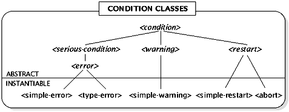

Background
Of course it is possible to program exception handling without using special linguistic features. For example, all functions could return an extra result that indicates whether they succeeded or failed, functions could take an extra argument that they consult if an exception occurs, or a designated exception-handling function could be called whenever a problem arises. All of these approaches have been used in one real-life system or another, but they are deficient in two ways. First, they are too informal and dont provide enough structure to allow an organized, systematic approach to exception handling. Second, and more importantly, the first two approaches do not provide textual separation between normal code and code for dealing with exceptions; exception-related code is sprinkled throughout the program. This leads to two problems: one is the well-known mistake of forgetting to test error codes and thus failing to detect an exception, perhaps one that could never happen; the other is that program clarity is lost because it isnt easy to think about the main flow of the program while temporarily ignoring exceptions.
Thus, the most important requirements of a linguistic exception-handling facility are to provide overall structure, to eliminate the possibility of failing to notice an exception, and to provide a clean separation between normal code and code for dealing with exceptions.
All exception systems involve the concept of signal (sometimes with a different name, such as raise or throw) and the concept of handle (sometimes with a different name such as on-unit or catch). All exception systems considered here dynamically match signalers with handlers, first invoking the most recently established matching handler still active, and then, if that matching handler declines to handle the exception, invoking the next most recent matching handler, and so on. Thus, exception systems really are a way of establishing a run-time connection between a signaler and a handler, as distinct from the usual fixed connection between a caller and a callee through function-name matching.
The major design choices in exception systemsname-based versus object-based, calling versus terminating, and formal versus ad-hoc recoveryare discussed in the following paragraphs.
PL/I and Ada have name-based exception systems. A program signals a name, and a handler matches if it handles the same name or any. The name is a constant in the source text of the program, not the result of an expression.
C++ and Common Lisp have object-based exception systems. A program signals an object, and a handler matches if it handles a type that object belongs to. Object-based exceptions are more powerful, because the object can communicate additional information from the signaler to the handler, because the object to be signaled can be chosen at run-time rather than signaling a fixed name, and because type inheritance in the handler matching adds abstraction and provides an organizing framework.
The C++ object-based exception system has complicated inheritance rules and allows any object whatsoever to be used as an exception. Common Lisp, in contrast, allows only objects that inherit from a certain built-in class to be used as exceptions, thus limiting the inheritance rules to class inheritance and providing a class on which to hang any protocols specific to exceptions.
Ada and C++ have terminating exception systems: before a handler receives control, all dynamic state between the handler and the signaler is unwound, as if signaling were a non-local goto from the signaler to the handler. PL/I has a calling exception system: when a handler receives control, the signaler is still active and control can be returned to it, as if signaling were a function call from the signaler to the handler. Common Lisp has both, with the calling semantics regarded as fundamental and the terminating semantics explained in terms of it. Note that calling semantics need not imply that the signal operation can return the way a function call returns; Common Lisp provides a restart mechanism that signalers use to grant handlers permission to return. The Common Lisp model shows that terminating versus calling is a property of handlers, not of exception systems as a whole.
Terminating exception systems are acceptable for errors. However, they do not work for an exception that is not an error and doesnt require termination, either because there is a default way to handle it and recover or because it can safely be ignored by applications that dont care about it. Non-error exceptions are quite common in networked environments, in computers with gradually expiring resources (such as batteries), in complex user interfaces, and as one approach for reflecting hardware exceptions such as page protection violations or floating-point overflow to the application.
Most languages have not formalized how to recover from exceptions, leaving programmers to invent ad hoc mechanisms. Common Lisp provides restarts, which is an object-based way of establishing a run-time connection from a handler back to the signaler or to any other part of the dynamically active program. A handler can choose to return control to any available restart, or else can mimic terminating semantics, using the languages normal non-local exit mechanisms. Restarts can also be a good way for programs to indicate to an interactive debugger what the end users choices are for recovery from an exception that lands in the debugger. In this sense, the debugger can be understood as just a complicated handler. Unfortunately some details of restarts are somewhat poorly designed in Common Lisp.
It is necessary to have a way to clean up when execution of a function is terminated by a non-local exit initiated either by the function itself or by something it explicitly or implicitly called. In C++ this includes invoking destructors for automatic objects, as well as application-specific cleanup. Ada, C++, and the Multics dialect of PL/I associate this action with exception handling. Common Lisp and Dylan realize it is related but different and call it unwind-protect.
For detailed information on exceptions in Common Lisp, refer to chapter 29 of Common Lisp: the Language, Second Edition, by Guy L. Steele Jr. For detailed information on exceptions in C++ (not yet implemented in many C++ implementations but adopted into the draft proposed ANSI C++ standard), refer to chapter 15 of The Annotated C++ Reference Manual, by Margaret A. Ellis and Bjarne Stroustrup. Although it is not necessary to read either document to understand the Dylan condition system, they may be helpful as sources of background information.
Overview
The Dylan exception facility is object-based. It uses calling semantics but also provides terminating handlers. It provides formal recovery.
Conditions are a dynamically bound, type-based mechanism for finding and invoking functions. When an exceptional situation occurs, it is indicated to the calling code by signaling a condition. The condition facility locates an applicable handler and calls it. An applicable handler is one that matches the signaled condition by type and by (an optional) test function associated with the handler. The condition system is simply a way for a signaler and a handler to be introduced to each other. Once they have met, they communicate through an ordinary function call.
Like any function, the called handler either returns some values or takes a non-local exit. Either way, the handler has handled the condition, and the act of signaling is completed. A dynamic handler also has the option of declining to handle the condition, passing the buck to the next applicable handler, by calling a next-handler function passed to the dynamic handler as an argument. A default handler cannot decline because it is always the last applicable handler. Every signaled condition is handled, because the system ensures that there is always an applicable default handler.
The following terms describe portions of the dynamic state of execution. These terms come from the stack model of function calling.
A less common handling style is to terminate the signaling unit by taking a non-local exit established in the middle stack, leaving the handler in force.
Instead of terminating, a handler can recover, returning control to the signaling unit. This can be done either by returning values that the signaling unit will understand or by taking a non-local exit established in the inside stack. Returning or exiting can be done directly, or a more formal recovery mechanism called restarting can be used. The advantage of the formal mechanism is the advantage of any formal interface: it provides more assurance that the handler and the signaling unit agree on the meaning of what they are doing and provides some isolation of the handler from names and data representations internal to the signaling unit.
Returning values or non-locally exiting directly, rather than restarting, is a less formal mechanism with an increased likelihood of accidentally violating the protocol or contract between a signaler and a handler. Nonetheless it is allowed, in the spirit of freedom and because it is the primitive upon which restarting is built. When the direct mechanism is used, it should be used with due care.
A handler restarts by signaling a restart. Any values needed for recovery are passed in the restart (that is, in initialization arguments that the restart remembers either in slots or in any other way it chooses). The restart is handled by a restart handler which either returns or takes a non-local exit. If the restart handler returns some values, signal returns those values and the handler that called signal also returns them. The call to signal from the signaling unit that signaled the original condition returns the same values, and the signaling unit recovers as directed by those values. If the restart handler was established by the signaling unit, then it was established in the inside stack and typically takes a non-local exit in the inside stack. It is just as valid to invoke a restart handler established in the outside or middle stack by a program component other than the signaling unit.
For every condition class there should be a recovery protocol that defines the meaning of handling by returning, the meaning of the values returned, and which restart handlers are supposed to be established by the signaling unit. The recovery protocol tells the handler what to expect from the signaler. For many condition classes, this is the empty protocol: handling by returning isnt allowed, and no particular restart handlers are provided. In this case only handling by terminating is possible. (Terminating might be accomplished by signaling a restart whose handler was established in the outside or middle stack, or by an ordinary non-local exit.) The recovery protocol for a subclass should be compatible with the recovery protocol of a superclass. That is, a handler that applies the superclasss recovery protocol, when the condition actually signaled was a direct instance of the subclass, should operate correctly.
An example recovery protocol for a hypothetical <unbound-slot> condition could be: returning a value uses that value as if it had been the contents of the slot; a restart handler for <new-value> is available; <new-value> has initialization arguments value:, the value to use, and permanent:, #t to store the value into the slot or #f (the default) to leave the slot unbound.
At present, no formal mechanism is provided for describing recovery protocols; they are left to the documentation of a condition class. Introspective functions are provided for discovering which recovery facilities are actually available, but this is different from (and sometimes is a superset of) the recovery facilities guaranteed by a recovery protocol always to be available.
The debugger is the condition handler of last resort which receives control if no program-provided handler handles a serious condition. (This is true even if the debugger provided cannot analyze or intervene in the execution of programs but can only abort or restart them. The debugger might be merely a core dumper, a bomb box, or something similar.) An interactive debugger ought to offer the user the ability to signal any restart for which a restart handler is applicable and to return if the conditions recovery protocol allows it. This could, for example, be done with a menu titled Recovery.
The following sections outline the classes and operations on conditions available in Dylan.
Classes
The classes described in this section are defined by Dylan. In addition, numerous condition classes specific to particular Dylan built-in functions or user functions will no doubt exist. Note that there can be other direct subclasses of <condition> besides the three specified ones. Also note that the subclass relationships shown below are not necessarily direct subclass relationships (i.e. implementation-specific classes can be inserted in the class hierarchy).
Abstract classes are shown in italics.
 Picture 2
There is a default handler for <condition> that returns #f.
Basic Operator for Signaling
Additional operators for signaling, defined for convenience, are described in a later section.
Basic Operator for Handling Conditions
There is no condition wall, i.e., when executing function the set of available handlers is not reset to the handlers that were in effect when the handler-bind was entered. FN33
The expansion of a handler-bind form is implementation-dependent. Implementations are encouraged to use an expansion that optimizes establishing a handler for both speed and space, even if that increases the cost of signaling. The assumption is that most of the time a handler will never be used, because the exception it is looking for will never occur.
Miscellaneous Condition Operations
print of a condition, when not verbose, prints the conditions error message with no additional text, punctuation, or newlines. Many condition classes define methods for print. If you define your own condition class, you need to define a method for print unless the inherited method is suitable. If you have a condition object and wish to print its error message, you can call print with verbose: #f.
Some condition classes define accessor functions. The accessor functions for the standardized classes are specified briefly with the class above. None of these are settable.
Full set of Operators for Signaling
The first operator listed here is a repeat of the basic operator. The others all have straightforward implementations in terms of other primitives but are provided to enable concise code in simple, common cases.
The second form signals a condition of type <simple-warning>.
The second form signals a condition of type <simple-error>.
If the restart handler is invoked, cerror returns #f; otherwise, cerror never returns. If cerror returns, the program should take the corrective actions promised in the restart-description. cerror is the standard way to signal correctable errors when no special class of restart condition is required.
The simplest way to handle a condition is to terminate the signaling unit by taking a non-local exit established in the outside stack. The convenient handler-case macro is provided for this purpose.
<condition> [Abstract Class]
A condition is a general instance of the abstract class <condition>. It is an object that represents the occurrence of an exception. Conditions have indefinite extent and no special restrictions. A program that does not encounter any exceptional situations will not implicitly allocate any conditions.
<serious-condition> [Abstract Class]
<serious-condition> is the abstract class of all conditions that cannot safely be ignored. There is a default handler for <serious-condition> that calls the debugger, using an unspecified mechanism.
<error> [Abstract Class]
<error> is the abstract class of all conditions that represent something invalid about the program (as opposed to environmental conditions such as running out of memory or battery power, or inability to establish a network connection, for example). <error> is a subclass of <serious-condition>. <error> is distinct from <serious-condition> so one can establish a handler for errors that does not also trap unpredictable environmental exceptions such as network problems.
<simple-error> [Instantiable Class]
<simple-error> is the concrete class of error conditions that consist of just an error message constructed from a format string and arguments; it is a subclass of <error>. The recovery protocol is empty. The initialization arguments format-string: and format-arguments: are accepted. The accessor functions condition-format-string and condition-format-arguments are applicable.
<type-error> [Instantiable Class]
<type-error> is a concrete subclass of <error> used by check-type. The recovery protocol is empty. The initialization arguments value: and type: are accepted. The accessor functions type-error-value and type-error-expected-type are applicable.
<warning> [Abstract Class]
<warning> is an abstract subclass of <condition>. There is a default handler for <warning> that displays the warning in a user-interface dependent way and then returns #f. The recovery protocol is that any value can be returned and will be ignored.
<simple-warning> [Instantiable Class]
<simple-warning> is a concrete subclass of <warning> used by signal. The recovery protocol is the same as for <warning>. The initialization arguments and accessor functions are the same as for <simple-error>.
<restart> [Abstract Class]
A restart is a general instance of the abstract class <restart>. <restart> is a subclass of <condition>. There is a default handler for <restart> that signals an error reporting an attempt to use a restart for which no restart handler was established. The recovery protocol concept is not applicable to restarts. The initialization argument condition: is accepted and ignored by <restart> some subclasses save the value of this initialization argument and use it to associate a restart with a particular condition from which the restart can recover. At present, none of these subclasses are defined as part of the language. Other restarts do not care; they can recover from any condition.
<simple-restart> [Instantiable Class]
<simple-restart> is a concrete subclass of <restart> that exists just to be distinct from the other subclasses of <restart> it is used by cerror.
<abort> [Instantiable Class]
<abort> is a concrete subclass of <restart> whose handlers are expected to terminate execution of the current application command, or similar unit of execution, and return control to something like an application command loop. This is comparable to command-period on the Macintosh. The exact details of this feature depend on the particular environment, of course, but signaling an instance of <abort> is a uniform way to get out.
signal[next citation] condition ==> values [Sealed Function]
Signals the condition, trying each active dynamic handler, the most recent first. If all dynamic handlers decline, signal calls (default-handler condition). If a handler returns, all the values that it returned are returned from signal. If signal returns when conditions recovery protocol does not allow returning, some handler has violated protocol; signal does not check for this error. If condition is a restart, the caller of signal should always assume that it might return.
handler-bind (type function #key test description) [Macro]
form1 form2...
==> values
handler-bind establishes a condition handler during the dynamic extent of the evaluation of the forms and returns the values of the last form, or #f if there are no forms. type, function, test, and description are evaluated before evaluation of the forms begins.
test and function are distinct so that handler applicability can be tested without actually handling (which might take a non-local exit). One use for this is constructing a list of available restart handlers.
signal[return to first citation] condition ==> values [Sealed Function]
signal string argument1 argument2 ... ==> values
Signals the condition, trying each active dynamic handler, the most recent first. If all dynamic handlers decline, signal calls (default-handler condition). If a handler returns, all the values that it returned are returned from signal. If signal returns when the conditions recovery protocol does not allow returning, some handler has violated protocol; signal does not check for this error. If the condition is a restart, the caller of signal should always assume that it might return.
error condition ==> {will never return} [Sealed Function]
error string argument1 argument2 ... ==> {will never return}
error is similar to signal but never returns; if a handler returns, error bombs directly to the debugger. error is used to make it clear that a program does not expect to receive control again after signaling a condition and might enable the compiler to generate slightly more compact code.
cerror restart-description condition ==> #f [Sealed Function]
cerror restart-description string argument1 argument2 ... ==> #f
cerror is the same as error but first establishes a handler for <simple-restart>, whose description is restart-description, which can be a string or a function of one argument.
break [condition] ==> #f [Sealed Function]
break [string argument1 argument2...] ==> #f
break obtains a condition in the same way as signal but then invokes the debugger immediately without signaling first. break establishes a <simple-restart> so the debugger can continue execution. This is useful for breakpoints. break always returns #f. With no arguments, a default message string is used.
check-type value type ==> value [Sealed Function]
check-type signals a <type-error> if (instance? value type) is false. If Dylan defines types that are more general than just classes, check-type will work with them. type-checking[return to first citation]
abort [Sealed Function]Performs (error (make <abort>)). This function is provided as a convenient shortcut.
The call is to error, rather than to signal, to guarantee that abort will never return.
Additional Operators for Handling
handler-case protected-form [Macro] ((typea #key condition test description) form1a form2a ...) ((typeb #key condition test description) form1b form2b ...) ... ==> valueshandler-case establishes handlers during the dynamic extent of the evaluation of the protected-form. If one of these handlers is invoked, it never declines, but immediately takes a non-local exit, executes the body forms in the dynamic environment that was in effect when the handler-case was entered, and returns the values of the last body form, or #f if the clause has no body forms. If the protected-form completes execution, handler-case returns the values of the protected-form. Note that when the forms of a clause are executed, the handlers established by the handler-case are no longer active.
type, test, and description are as for handler-bind. condition, if present, is not evaluated but is the name of a variable that is bound to the condition around the forms. handler-case can expand into handler-bind and bind-exit; it exists only for program conciseness. handler-case will usually be more commonly used than handler-bind.
The handler clauses are checked in the order in which they appear. That is, the first handler will take precedence over the second, etc.
A very trivial use of handler case might look like:
(handler-case (some-function) ((<type-error>) "there was a type-error") ((<error>) "there was an error") ((<warning>) "there was a warning"))
default-handler condition ==> values [Generic Function]default-handler is called if no dynamic handler handles a condition. There are predefined methods for <condition>, which returns #f, <serious-condition>, which calls the debugger, <warning>, which prints the message and returns #f, and <restart>, which signals an error.
Operators for Interactive Handling
restart-query restart [Generic Function]restart-query engages the interactive user in a dialog and stores the results in slots of restart. This function is designed to be called from a handler, after making a restart and before signaling it. The debugger uses restart-query, for example. There is a default method for <restart> which does nothing.
return-query condition [Generic Function]If the recovery protocol of condition allows returning values, this engages the interactive user in a dialog and returns the results as any number of values, which the handler should return. return-query should not be called if (return-allowed? condition) returns #f. If you define your own condition class whose recovery protocol allows returning values, you need to define a method for return-query, unless the inherited method is suitable.
Operators for Introspection
do-handlers funarg [Sealed Function]do-handlers applies funarg to all dynamically active handlers, the most recently established first. funarg receives four arguments: type, test, function, and description. The arguments describe a dynamically active handler. All arguments have dynamic extent and must not be modified. test is defaulted to a function that always returns #t. description is #f if unsupplied by the handler, or else will be a function or a string.
return-allowed condition ==> boolean [Generic Function]This predicate returns #t if the recovery protocol of condition allows returning values, or #f if it does not. There is a default method for <condition> that returns #f. If you define your own condition class, you need to define a method for return-allowed? unless the inherited method is suitable.
return-description condition ==> description [Generic Function]If the recovery protocol of this condition allows returning values, return-description returns a description of the meaning of returning values, similar to the description of a restart handler. This description can be a function, a string, or #f. return-description should not be called if (return-allowed? condition) returns #f. If you define your own condition class whose recovery protocol allows returning values, you need to define a method for return-description unless the inherited method is suitable.
;;; Classes such as <file-not-found> used in these examples are
;;; invented for the example and are not part of the specification
;;; This example shows minimal handling of a file-not-found error
(handler-case (open "file-that-doesnt-exist")
((<file-not-found> condition: c
(format *error-output* "~&The file ~A was not found."
(file-name c))))
;;; This example shows how to handle a file-not-found error by
;;; reading a different file instead.
(handler-bind (<file-not-found>
(method (condition next-handler)
(signal (make <try-a-different-file>
file-name: "my-emergency-backup-file"))))
(open "file-that-doesnt-exist")
....)
(define-method open (the-file)
(handler-case (guts-of-open the-file)
((<try-a-different-file>
description: (method (stream)
(format stream "Read a different file instead of ~A"
the-file))
condition: restart
(open (file-name restart)))))))
(define-method guts-of-open (the-file)
(bind ((result (operating-system-open the-file)))
(cond ((instance? result <stream>) result)
((id? result +file-not-found-error-code+)
(error (make <file-not-found> file-name: the-file)))
...)))
(define-class <file-not-found> (<error>)
((file-name init-keyword: file-name:)))
(define-method print ((self <file-not-found>) #key stream verbose)
(if verbose
(next-method)
(format stream "The file ~A was not found" (file-name self))))
(define-class <try-a-different-file> (<restart>)
((file-name init-keyword: file-name:)))
;;; This is the same example improved so the restart handler that
;;; reads another file can only be reached by a handler for the
;;; associated condition, useful if there are nested errors.
(handler-bind (<file-not-found>)
(method (condition next-handler)
(signal (make <try-a-different-file>
condition: condition
file-name: "my-emergency-backup-file")))
(open "file-that-doesnt-exist")
....)
(define-method open (the-file)
.... (guts-of-open the-file))
(define-method guts-of-open (the-file)
(bind ((result (operating-system-open the-file)))
(cond ((instance? result <stream>) result)
((id? result +file-not-found-error-code+)
(bind ((condition (make <file-not-found> file-name: the-file)))
(handler-case (error condition)
((<try-a-different-file>
test: (compose (curry id? condition) restart-condition)
description: (method (stream)
(format stream
"Read a different file instead of ~A"
the-file))
condition: restart
(open (file-name restart)))))))
...)))
(define-class <file-not-found> (<error>)
((file-name init-keyword: file-name:)))
(define-method print ((self <file-not-found>) #key stream verbose)
(if verbose
(next-method)
(format stream "The file ~A was not found" (file-name self))))
(define-class <try-a-different-file> (<restart>)
((condition init-keyword: condition: reader: restart-condition)
(file-name init-keyword: file-name:)))